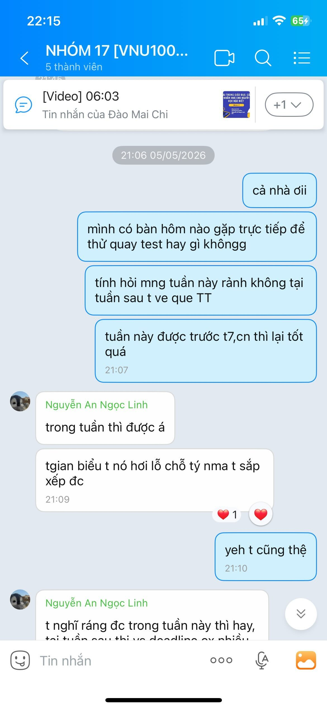
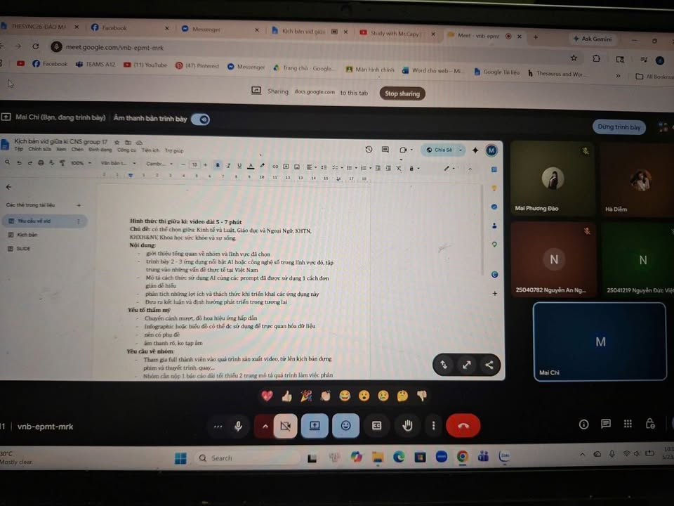
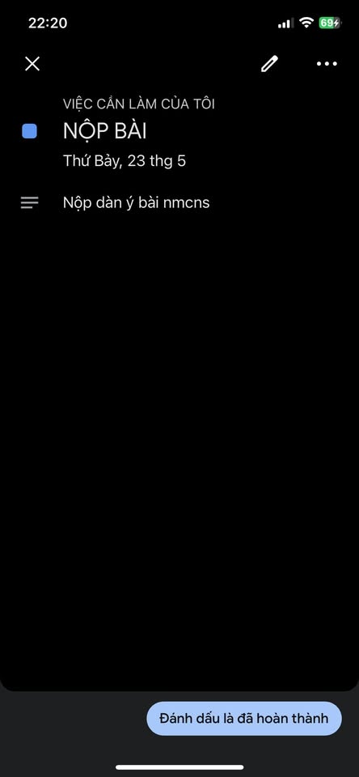

Bài 04 / Hồ sơ học tập
Bài 4: Giao tiếp và hợp tác trong môi trường số
Phối hợp thực hiện dự án “Ứng dụng AI hỗ trợ người mắc chứng khó đọc trong giáo dục”.
Đào Thị Mai PhươngGoogle TasksZalo & Google MeetGoogle Docs & Drive
Bối cảnh dự án
Trong dự án nhóm về AI hỗ trợ người mắc chứng khó đọc trong giáo dục, tôi tham gia thảo luận, xây dựng ý tưởng, đóng góp nội dung và phối hợp cùng các thành viên để hoàn thành sản phẩm.
Công cụ đã sử dụng
| Công cụ | Vai trò |
|---|---|
| Google Tasks | Ghi lại, theo dõi nhiệm vụ cá nhân và thời hạn. |
| Zalo | Trao đổi lịch họp, thời gian quay video và phân công. |
| Google Docs | Cùng xây dựng kịch bản, chỉnh sửa và theo dõi nội dung. |
| Google Drive | Lưu trữ, chia sẻ tài liệu để thành viên cùng truy cập. |
| Google Meet | Họp trực tuyến, thống nhất ý tưởng và công việc. |
Nhiệm vụ cá nhân
- Đề xuất thời gian gặp mặt để quay thử video.
- Đóng góp ý tưởng cho kịch bản dự án.
- Tham gia các buổi họp trực tuyến.
- Theo dõi nhiệm vụ bằng Google Tasks.
- Hỗ trợ chỉnh sửa tài liệu trên Google Docs.
Hiệu quả và khó khăn
Các công cụ trực tuyến giúp nhóm tiết kiệm thời gian, chỉnh sửa đồng thời và duy trì liên lạc nhanh. Khó khăn chính là lịch học khác nhau; nhóm giải quyết bằng trao đổi trên Zalo để thống nhất khung giờ, đồng thời dùng Google Docs và Google Meet để giảm số lần gặp trực tiếp.
Minh chứng cộng tác



Bản PDF: Báo cáo đầy đủ của Bài 4.
Mở PDF báo cáo